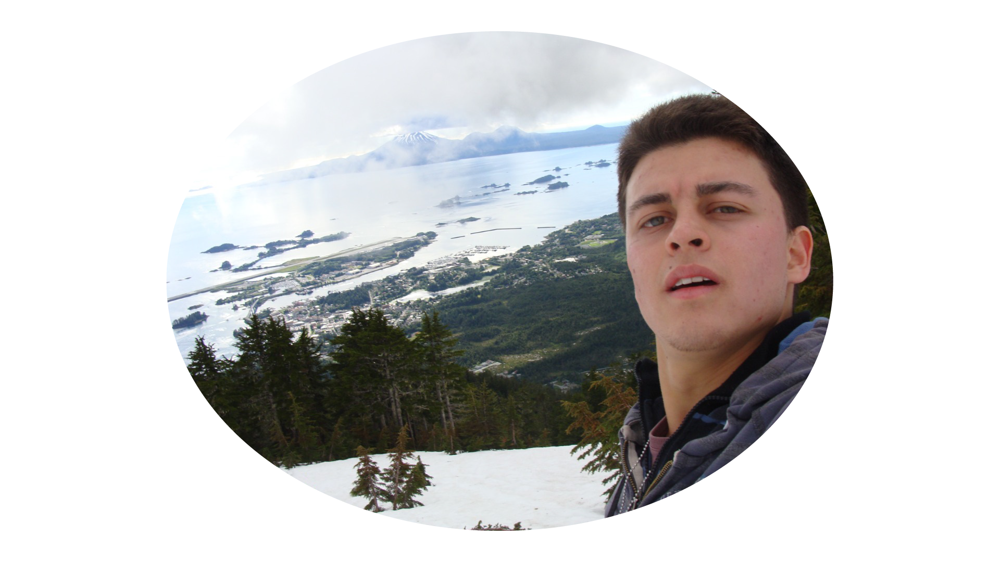

Engr. Alberth Rodriguez

"I am an Industrial Engineer with experience in HR analysis and logistics. In my previous role, I
successfully analyzed data for a workforce of 3000 employees and took the lead on a project aimed at
enhancing data capture during training sessions. Additionally, I gained valuable experience as a bilingual
assistant at Scotiabank, where I effectively handled calls from customers located in Canada.
During the challenging times of the Covid-19 pandemic, I took the opportunity to explore programming and
undertook personal projects to further develop my skills. My dedication and hard work in this field were
acknowledged through the achievement of two scholarships. One scholarship allowed me to study and
specialize in databases such as MySQL, while the other provided me with the opportunity to focus on web
development. These experiences instilled in me a greater level of confidence and solidified my interest
in pursuing related studies abroad, particularly in an English-speaking country.
Motivated by my passion for learning, I made the decision to come to Canada to pursue a program in Web and Mobile App Development. This choice aligns perfectly with my career aspirations and offers me the chance to immerse myself in a dynamic environment that fosters innovation and growth."
•
Education
Langara College
Vancouver, BC, Canada
Post-Degree Web and Mobile App Development
May/2023 - Present
•
Universidad Nacional de Colombia
Bogota, Colombia
Certificate, Programming skills with deepening in web application development.
May/2021 – December/2021
*Scholarship*
•
Universidad de San Buenaventura
Bogota, Colombia
Certificate, Development of projects from databases.
July/2020 – December/2020
*Scholarship*
•
Universidad Militar Nueva Granada
Bogota, Colombia
Bachelor, Industrial Engineering.
June/2011 - June/2017
•
Langara College
Vancouver, BC, Canada
Post-Degree Web and Mobile App Development
May/2023 - Present
Universidad Nacional de Colombia
Bogota, Colombia
Certificate, Programming skills with deepening in web application development.
May/2021 – December/2021
*Scholarship*
Universidad de San Buenaventura
Bogota, Colombia
Certificate, Development of projects from databases.
July/2020 – December/2020
*Scholarship*
Universidad Militar Nueva Granada
Bogota, Colombia
Bachelor, Industrial Engineering.
June/2011 - June/2017
Employment
Solistica (Open Market)
Bogota, Colombia
Training and Development Analyst
August/2018 - January/2020
- Lead the development of a new platform for a logistical company with the IT department as a product owner. The platform provided a centralized system to store and manage all the training evidences of over 3000 employees nationwide. By digitizing the evidences, the HHRR department achieved enhanced accessibility, ensuring quick and easy retrieval of employee training record.
- Implemented strategic tax benefit utilization to optimize the internship program's total payroll, resulting in a significant reduction of 15%. By leveraging available tax incentives and credits, we successfully maximized cost savings while maintaining the quality and effectiveness of the program. This initiative not only helped to minimize financial burdens but also provided an opportunity to allocate resources to other critical areas of the organization.
- Directed a successful initiative to develop a comprehensive indexes (BSC) leveraging the data collected through our platform, resulting in a remarkable reduction of improvement opportunities identified during audits. Through my leadership, we were able to transform the audit process, reducing the number of improvement opportunities from an average of four per month to only one or even zero per month. By harnessing the power of data-driven insights, we proactively identified areas for enhancement and implemented effective measures to optimize operational efficiency and ensure strict compliance.
•
GSG Gestión de Servicios Globales del grupo Scotiabank
Bogota, Colombia
Customer Service Agent (bilingual)
May/2017 - October/2017
- Delivered tailored and personalized services to every individual customer, leading to positive feedback and satisfaction from the bank's customers.
- Thoroughly verified the identity of each and every customer, ensuring their peace of mind and confidence in the safety of their savings.
- Effectively handled a substantial surge in calls, singlehandedly managing the high volume during an exceptionally busy workday.
•
BBVA
Bogota, Colombia
Bank teller
November/2015 - February/2016
- Manage a wide range of client transactions and operations within the office, including deposits, withdrawals, loan payments, service payments, and various other financial activities.
- Verify the authenticity of every bank deposit, safeguarding the financial interests and profitability of the institution by ensuring the integrity of all deposited notes and checks.
- Simultaneously introduces new products, such as credit cards, to customers while performing essential banking operations.
•
Open Market - The best Logistics team
Bogota, Colombia
Training, Development and Innovation Trainee
May/2015 - October/2015
- Successfully organized and executed the graduation ceremony for scholarship employees, hosting an event that celebrated the achievements of over 300 invitees. As the event planner, I meticulously coordinated all aspects, from venue selection and logistics management to guest invitations and program coordination. By collaborating with various stakeholders, including scholarship recipients, their families, and company executives, I ensured a memorable and seamless experience for all.
- Secured and facilitated 100 highly coveted scholarships for employees, employing a meticulous filtering and evaluation process to ensure that only the most deserving individuals were granted the opportunity to pursue a technician program at zero cost. This initiative not only provided a life-changing educational opportunity for the selected employees but also contributed to their professional growth and skill enhancement, making the company more competitive and well prepared for future challenges.
- Produce comprehensive periodic reports featuring a range of key indicators, percentages, visually informative Pareto charts, Excel charts, and integrated databases.
•
Hard Skills
Programming Skills
- Designed and implemented a Java-based CRUD (Create, Read, Update, Delete) application, leveraging a relational database such as MySQL or PostgreSQL. This robust system facilitated seamless data management and enhanced efficiency in data operations.
- Constructed a website utilizing a monolithic architecture, combining HTML, CSS, Python, and the Vue framework. Integrated PostgreSQL as the backend database, enabling efficient data storage and retrieval for seamless user interactions.
- Engineered a dynamic website employing a microservices architecture, leveraging HTML, CSS, Python, and the Vue framework. Implemented GraphQL for efficient data querying and utilized both PostgreSQL and MongoDB databases, ensuring optimal data storage and retrieval capabilities.
•
Database Skills
- Designed and implemented a relational database, carefully identifying primary keys and foreign keys to ensure data integrity and prevent duplication or null values.
- Conducted an in-depth analysis of the data types used in each table of the MySQL database, optimizing memory usage while ensuring data quality remains uncompromised.
- Implemented MongoDB as a non-relational database for efficient handling of unstructured data, resulting in faster data retrieval and improved application responsiveness, enhancing user experience.
•
Data Analysis Skills
- Created advanced Excel workbooks utilizing macros and Visual Basic, enabling streamlined data filtering and analysis processes. This resulted in improved efficiency and accelerated data insights, simplifying the data manipulation and analysis workflows.
- Conducted fundamental data analysis using Python and Pandas, enabling the generation of meaningful visualizations to highlight key insights and trends in the data.
- Performed essential data analysis using R Studio, leveraging its robust capabilities for data visualization to generate impactful insights and facilitate data-driven decision-making.
•
Soft Skills
Time Management Skills
- Effectively organized activities based on their respective priorities, ensuring adherence to established timelines and achieving expected outcomes.
- Maximized productivity by prioritizing and tackling complex and demanding tasks first, enabling proactive problem-solving and efficient handling of any potential challenges or inconveniences that may arise.
- Proactively anticipate upcoming tasks, ensuring that any potential challenges or inconveniences are identified and resolved in a timely manner.
•
Teamwork Skills
- Guided and nurtured the professional growth of interns, proactively identifying their unique strengths and empowering them to succeed in a professional work environment.
- Recognize and leverage the individual skills of team members to ensure a well-balanced distribution of tasks, thereby preventing any team member from becoming overwhelmed and fostering a harmonious and efficient work environment.
- Lead a team, driving efficiency and effectiveness in successfully tackling any challenge that comes our way.
•
Conflict Resolution Skills
- Resolve customer complaints by diligently identifying optimal solutions that effectively address their requests, while safeguarding the financial interests and profitability of the company.
- Attentively listen to any potential disagreements with co-workers, empathetically considering their perspectives, and identifying mutually beneficial solutions that address the disagreement while upholding the company's objectives.
- Strive to engage in negotiations with suppliers, aiming to achieve mutually satisfactory resolutions where both parties feel content.
•
Interests
- Puzzles
- Ping Pong
- Hiking
- Sightseeing
- Horses
•